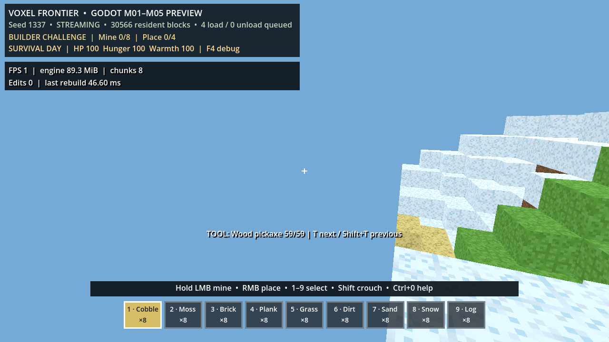

루프 목표
16×16 열의 결정적 지형 계산을 워커 스레드에서 처리해, 이동 프레임이 생성 계산을 직접 실행하지 않도록 한다. Godot 노드·물리·렌더러·라이브 저장소 변경은 메인 스레드에만 남긴다.
게임 플레이 증거

실제 렌더 창. 초기 3×3 링은 일괄 생성하지 않고 중심 열부터 채워진다. HUD의 resident blocks·load/unload queue가 진행 상태를 보인다.
자동 검증과 측정
tools/streaming_smoke.gd: 6개 단언 통과 — 초기 9열 점진 적재, 워커 9회 이상 완료, 청크 경계 이동의 3열 해제·적재, 워커/커밋 시간 관측tools/streaming_profile.gd: 5개 단언 통과 — 시드 1337, 초기 3×3 뒤 +X 네 번 이동(21개 열 생성/12개 해제)- 헤드리스 CPU 프록시 P95: 스케줄러 틱 23.230ms, 워커 계산 26.084ms, 메인 스레드 저장소 커밋 24.616ms. GPU·표시 지연 측정이 아니다.
워커 분리는 검증됐지만 커밋 P95가 16.7ms(60Hz) 예산을 넘는다. 따라서 M08은 기능 완료 기록이지 스트리밍 성능 완료가 아니다.
설계 검토와 개선 결정
빠르게 이동해 워커 결과가 낡아질 경우, 현재 목표 3×3 링 밖의 결과는 커밋하지 않고 폐기한다. 수정/스테이션 열 고정 규칙과 결정적 전역 좌표 생성은 유지했다. 다음 M09는 저장소 반영과 메시·충돌 재생성을 열/프레임 예산으로 쪼개어 P95를 낮추는 데 집중한다.
후속 종료 게이트
M09에서 열 단위 커밋·메시·충돌의 개별 예산을 계측하고, 30회 경계 왕복의 렌더/헤드리스 P95를 분리 기록한다.